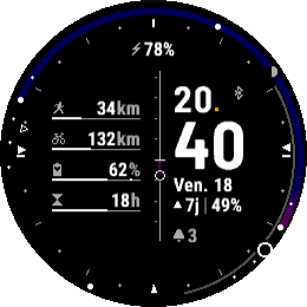
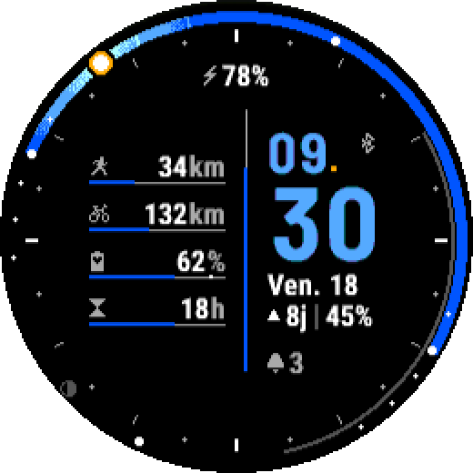

24h Astro
Le ciel de votre journée, d'un coup d'œil.
L'anneau fait le tour des 24 heures : minuit en bas, midi en haut. Le ciel s'y dessine en direct, calculé pour votre position. Le soleil est à sa vraie place, la lune aussi.

Le ciel
- Lever, coucher, midi et minuit solaires, les trois crépuscules : marqués sur l'anneau.
- Une boussole sur les graduations : d'où le soleil se lève, où il se couche, où il est maintenant (ou la lune).
- Jour et nuit polaires compris.
La Lune
- Son arc du lever au coucher, son disque à la bonne phase.
- Le compte à rebours jusqu'à la prochaine pleine ou nouvelle lune, et sa part éclairée.
Vos données
- Jusqu'à 4 jauges, en barres ou en anneaux : sport, Body Battery, récupération, pas, étages, minutes intensives, fréquence cardiaque, stress.
- 4 champs au choix : date, lune, prochain lever ou coucher, durée du jour, batterie, notifications et vos données du jour.
Sur mesure
- 3 thèmes de couleur, 6 dispositions, une barre centrale au choix.
- Position automatique ou saisie à la main.
- Français et anglais, km ou miles selon la montre.



En savoir plus
- Lire le cadran : l'anneau, la lune, la boussole, les notations.
- Réglages
- Montres compatibles
- Questions fréquentes
- Nouveautés
- Les données de la montre : jauges et champs, communs à tous les cadrans.